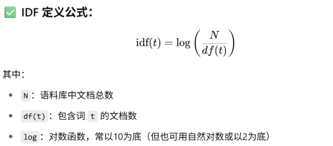
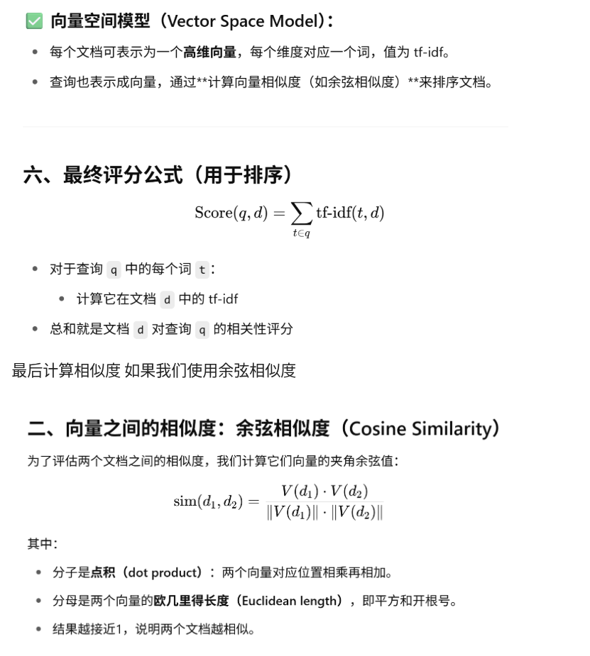
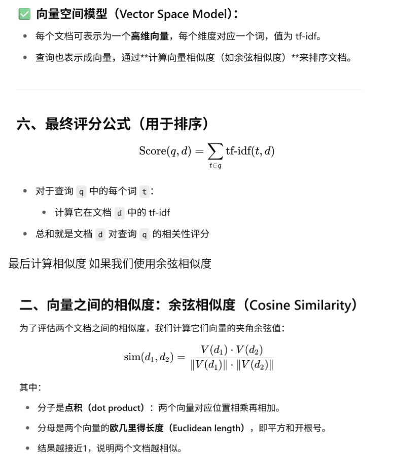
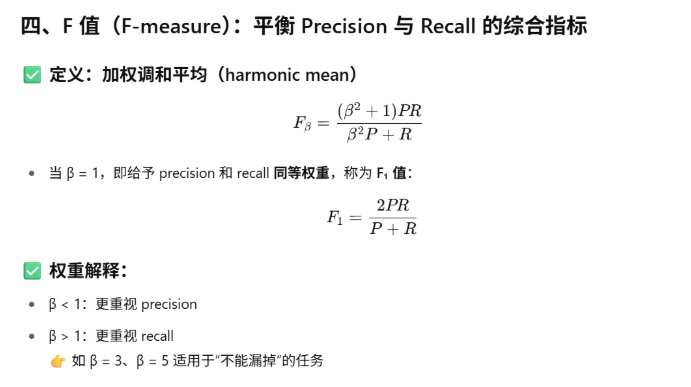

倒排索引与检索流程
一、问题
当我们想要检索一本书中是否包含某个单词、但是不包含另外一个单词，最简答的做法往往是直接从头到尾阅读这本书的全部内容，然后全部扫描确定。
这种线性扫描方法被称为 Grepping（Linux 上的 grep 也直接对应这一功能）。
对于一个文字不大的书籍这是可行的，但在现实大规模场景中往往不可用。
二、非线性扫描：关联矩阵
- 建立一个关联矩阵：对每个单词建立向量表，记录这个单词在哪些章节/文档中出现。
- 用 1 表示出现，0 表示没有出现。
- 然后以布尔方式（与 / 或 / 非）操作这些向量。
稀疏矩阵与资源开销
- 例如我们拥有 50 万个词汇，存在于 100 万个文档中 ⇒ 5000 亿个元素。
- 由于每个文档只包含 1000 个单词，矩阵中 超过 99.8% 都是 0（极稀疏）。
- 在实际应用中用处很小，特别是机器学习中完全无法使用。
三、检索效果指标
- 准确率 Precision (P)：被检索到的文档是相关的 / 所有被检索到的文档。
- 召回率 Recall：被检索到的文档是相关的 / 所有相关的文档。
四、倒排索引（Inverted Index）
现在回到刚才的例子，我们尝试进行优化——引出一个核心概念 倒排索引（Inverted Index）。
其中命名的时候“倒排”这个单词完全没有意义，不知道为什么这样写，但是大佬这样叫我们就这样用了。
基本思想：记录数据的两个部分
1. 存在的所有单词 → 使用词汇表/字典记录。
2. Postings list：每个单词对应的文档编号 → 也就是每个次对应的文档编号列表（即这些词出现在哪些文档中）。
示例
| Term | Documents |
|---|---|
| Brutus | Doc1, Doc2, Doc4 |
| Caesar | Doc1, Doc2, Doc4, D5 |
| Calpurnia | Doc2 |
查询： Brutus AND Caesar AND NOT Calpurnia
- 取交集 → Doc1, Doc2, Doc4 ∩ Doc1, Doc2, Doc4, D5 = Doc1, Doc2, Doc4
- 再排除 Calpurnia 出现的 Doc2 → 最终结果：Doc1, Doc4
看上去很简单，但如果直接用仍然是一个“垃圾方法”（当然能够进行一定优化）。
五、倒排索引的构建过程
倒排索引是现代搜索引擎的核心结构。
1) 步骤 1：收集文档
Doc1: Friends, Romans, countrymen. So let it be with Caesar ...
2) 步骤 2：分词（Token）
将每篇文档转换为一个词条 Token。
Tokens: Friends Romans countrymen So let it be with Caesar
3) 步骤 3：语言预处理（标准化）
使用之前讲解的方法对语言进行预处理，包括小写化、词干提取、去标点化，使词标准化。
friend roman countryman so let it be with caesar
4) 步骤 4：构建倒排索引
从标准化的 Tokens 中建立倒排索引。

倒排索引：Postings、DF、TF、BOW 与 IDF
一、Postings 与 DF 基本概念
- Posting 标识其在哪些文档中出现过。
- 随后将 Posting 出现的次数进行统计，最终合并成为 一个倒排索引（Inverted Index）。
示例表
| Term | Document Frequency | Postings List |
|---|---|---|
| ambitious | 1 | 2 |
| be | 1 | 2 |
| brutus | 2 | 1, 2 |
| caesar | 2 | 1, 2 |
- DF（Document Frequency）：标识该词出现在多少不同的文档中。
- Posting：表示出现的文档是哪些。
二、在倒排上的优化：引入词频（TF）
我们过去单纯统计哪些文档中出现过该词。现在我们加入某个词在某个文档出现的次数，记为：
- TF (Term Frequency)：tf(t, d)
在统计的时候，采用 Bag-of-Words（BOW） 方法：忽略顺序，只考虑词出现的次数。
BOW 等价示例
- “Mary is quicker than John”
- “John is quicker than Mary”
在 BOW 模型中二者相同，因为它们的词频统计完全一致。
三、基于词频（TF）的评分机制
将文档中出现的词的次数作为它在文档中的权重，据此对用户查询词与文档之间进行加权匹配并进行排序：
Score(d, q) = ∑ tf(t, d)
四、问题：高频词的干扰
仅靠 TF 会出现问题：诸如 a / the / is 等高频词几乎所有文档都出现，但它们区分度差，容易主导打分。
五、引入 IDF（逆文档频率）
为降低常见词的重要性、提升稀有词的区分能力，我们引入：
- IDF (Inverse Document Frequency)：减弱出现频率过高的词的权重，提高稀有词的区分能力。
（在实际系统中，常与 TF 结合为 TF‑IDF 用于排序。）  这样我们直接让一些很少出现的词汇的idf变的非常大 最后我们将tf 和idf结合 生成 tf-idf 这样我们就能够在输入的时候考量 一个词在某篇文档出现来很多次 TF高 且这个词在语料库很少见 IDF高



排序导向指标：MAP / MRR / Precision@k / R-Precision / ROC–AUC / NDCG
先前的精准率（Precision）与召回率（Recall）更像集合级指标：关心“结果集合是否包含正确答案”。
实际搜索引擎返回的是有顺序的列表（如 Top-10），用户更在意“前几条是否相关”。因此需要排序导向的评估指标。
1) MRR（Mean Reciprocal Rank，平均倒数排名）
用来衡量：对于每个查询，第一个相关文档在结果列表中的排名（越靠前越好）。
记第 \(i\) 个查询的第一个相关文档排名为 \(\mathrm{rank}_i\)。
定义：
$$
\mathrm{MRR}=\frac{1}{|Q|}\sum_{i=1}^{|Q|}\frac{1}{\mathrm{rank}_i}
$$
解读：只关心“第一个相关文档”出现的位置；如果第一条就是相关，贡献为 1；如果在第 5 条才出现，贡献为 \(1/5\)。
注：只关心“第一个相关文档位置”的是 MRR，不是 MAP。
2) MAP（Mean Average Precision，平均平均准确率）
用来衡量：对每个查询计算其平均准确率（AP），再对所有查询取平均。MAP 同时关注“相关项的位置”与“相关项的完整性”。
先约定：记 \(P(k)\) 表示 P@k（前 \(k\) 个结果的准确率）。
设查询 \(q\) 有 \(R\) 个相关文档，这些相关文档出现在排名位置集合 \(\{k_1,k_2,\dots,k_R\}\)（从 1 开始）。
该查询的 AP： $$ \mathrm{AP}(q)=\frac{1}{R}\sum_{j=1}^{R} P(k_j) $$
MAP： $$ \mathrm{MAP}=\frac{1}{|Q|}\sum_{i=1}^{|Q|}\mathrm{AP}(q_i) $$
3) Precision@k（@k 准确率）
定义：系统返回的前 \(k\) 个结果中，相关文档占比： $$ \text{P@k}=\frac{\text{前 }k\text{ 个中相关文档的数量}}{k} $$
例：前 5 个文档中有 3 个相关 → \(\text{P@5}=\frac{3}{5}=0.6\)。
常与 Recall@k 联合查看；@k 指标专注“前 \(k\) 条”的质量。
4) R-Precision
定义：设某查询共有 \(R\) 个相关文档，计算前 \(R\) 个结果的准确率： $$ \mathrm{R\text{-}Precision}=\frac{\text{前 }R\text{ 个返回结果中相关文档的数量}}{R} $$
当不知道合理的 \(k\) 取值时，R-Precision 以“真实相关数”作为对齐窗口。
5) ROC 曲线与 ROC–AUC
当系统能为每个结果给出可阈值化的相关性分数时，可绘制 ROC：
-
ROC 曲线：横轴 FPR（假阳性率），纵轴 TPR（真正例率、召回率）。 $$ \text{TPR}=\frac{\text{True Positives}}{\text{All Positives}},\qquad \text{FPR}=\frac{\text{False Positives}}{\text{All Negatives}} $$
-
ROC-AUC：ROC 曲线下面积，\([0,1]\) 区间，越大越好。
| AUC 值 | 性能说明 |
|---|---|
| 0.5 | 随机猜测 |
| 0.7–0.8 | 一般 |
| 0.9+ | 非常好 |
| 1.0 | 完美分类器 |
在排序评估中，类别极不平衡时更常用 PR-AUC（精准率–召回率曲线下面积）。
6) NDCG（Normalized Discounted Cumulative Gain）
用于有“等级相关性”的场景（如推荐系统、多等级打分的检索）。
DCG@k（常见形式之一）： $$ \mathrm{DCG}k=rel_1+\sum{i=2}^{k}\frac{rel_i}{\log_2(i+1)} $$
NDCG@k： $$ \mathrm{NDCG}_k=\frac{\mathrm{DCG}_k}{\mathrm{IDCG}_k} $$
直觉：把高相关的结果放更靠前更有价值（折扣因子）；NDCG 归一化后便于不同查询/列表长度间比较。
小结与选型建议
- 只关心第一个命中的位置：用 MRR。
- 同时关心所有相关文档的位置与覆盖：用 MAP。
- 关注 Top-k 质量：用 Precision@k / Recall@k；未知 \(k\) 可看 R-Precision。
- 有等级分、关注整体排序质量：用 NDCG@k。
- 需要阈值化、看分类能力：ROC-AUC（或 PR-AUC）。